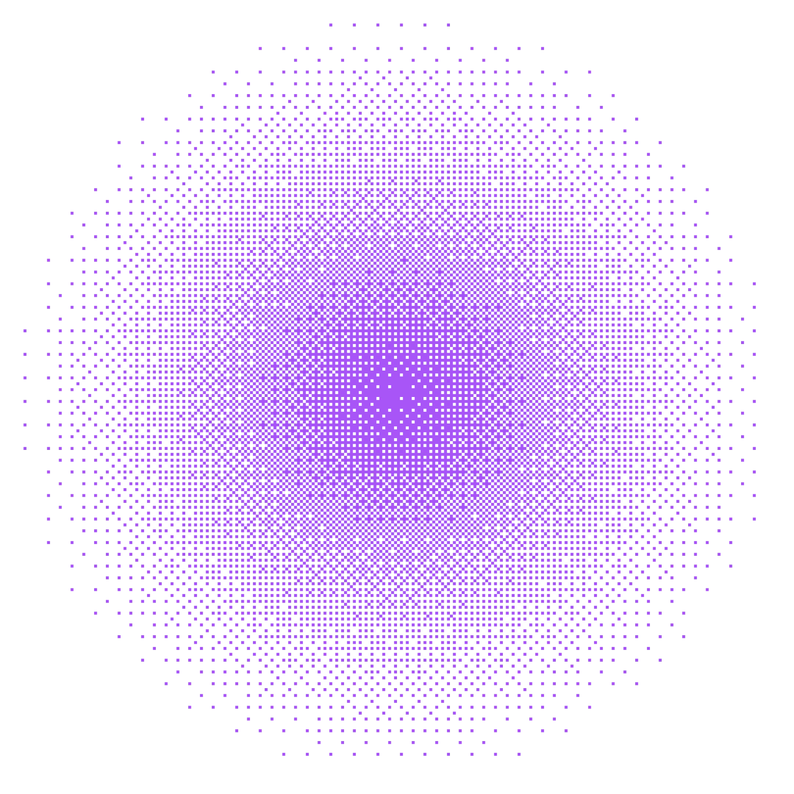

Victor
Coelho
Menos ruído, mais estratégia.
+ de 14 anos tirando marcas do improviso.
Sócio e head da Agência Define.
Estratégia que
corta o ruído.
Comecei no branding e aprendi que o marketing funciona como um cérebro de dois lados: um cuida da marca, o outro do growth e dos dados. Se a sua marca merece mais que improviso e quer virar referência, precisa de um marketing que enxergue o todo, com os dois lados trabalhando juntos.
Posicionamento claro, proposta de valor e uma voz coerente em cada ponto de contato. Com acompanhamento contínuo, a marca deixa de ser mais uma e vira referência.
Logo, cores, tipografia e um sistema que mantém tudo coerente. Mais do que bonita, a identidade precisa mostrar o que a marca é.
Atrair novos pacientes é só uma parte. Growth também é manter quem já chegou por perto e traçar a estratégia para o negócio crescer, com decisões baseadas em dados.
A IA potencializa o processo criativo e abre novas possibilidades. No negócio, ajuda a tomar decisões com mais clareza, otimizando processos e transformando dados em informação.
Conversas para equipes e eventos sobre marca, estratégia e o uso real de IA no marketing.

Prazer, Victor.
Sou sócio e head da Agência Define, em Cacoal (RO). Há mais de 14 anos ajudo marcas a sair do improviso, unindo estratégia, design e um uso real de IA na criação.
Aqui eu falo de marca para médicos e clínicas, e de bastidor para quem trabalha com criação.
Ficou com
alguma dúvida?
Me chama no WhatsApp.
Eu respondo pessoalmente.